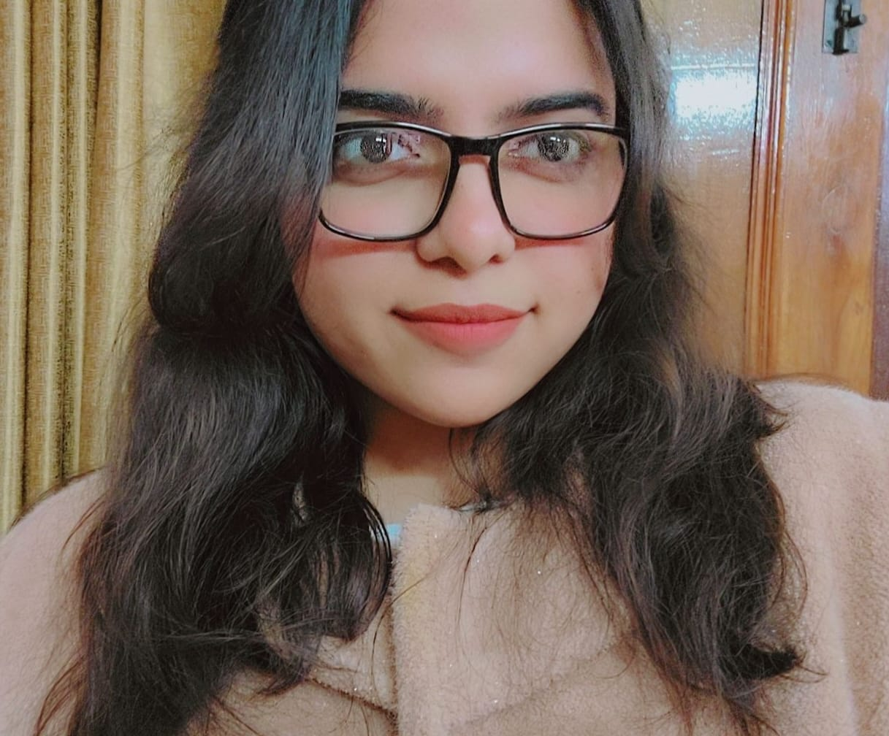

My Resume
Kanishka Kaushik

SUMMARY
Computer Science student with foundational knowledge of web development, HTML, and programming concepts. Eager to learn new technologies, build real-world projects, and contribute to a growth-oriented organization.
EDUCATION
Bachelor of Technology (B.Tech)
Computer Science and Engineering (Internet of Things)
ABES Institute of Technology
2022 – 2026
TECHNICAL SKILLS
- Frontend Technologies: HTML5, CSS3
- Backend Technologies (Basic Knowledge): PHP
- Database: MySQL
- Web Concepts: Basic Responsive Design, Form Handling, CRUD Operations
- Tools: VS Code, XAMPP
PROJECT
Industrial Basics and General Application
Cafe Website – Academic Project
Technologies: HTML, CSS, PHP
- Designed and developed a structured café website as part of academic coursework.
- Created multiple webpages including Home, Menu, About, and Contact pages.
- Implemented form handling functionality using PHP.
- Applied CSS styling for layouts, color schemes, and basic responsive design.
CERTIFICATES & ACHIVEMENTS
- Participating in Empowering Votes Digitally (ABESIT)
- Attending Unleash The Power of Web3 & Open Source (ABESIT)
- Completing Prompt Engineering (Infosys Springboard)
- Completing Entrepreneurship (Udmey)
- Completing Cryptography (Coursera)
- Completing Basic in Python (Infosys Springboard)
- Completing Become a Generative AI Trailblazer (Coursera)
- Completing Time Management (Infosys Springboard)
- CODE-A-THON 3.0 – Consolation Winner (IIC) (ABESIT)
Hobbies
Contact Me